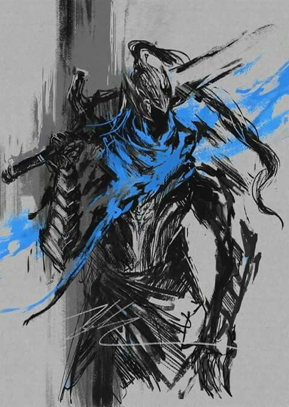
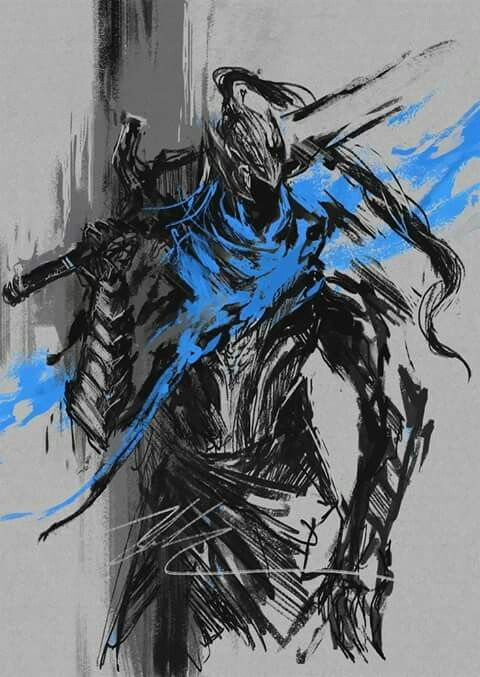

Esto es todo el contenido de mi título 1
AutorEsto es todo el contenido de mi título 2
Esto es todo el contenido de mi título 3
Esto es todo el contenido de mi título 4
Esto es todo el contenido de mi título 5
Esto es todo el contenido de mi título 6
 

En los albores de la Edad de Fuego, Gwyn descubrió una de las Almas de Señor junto al Furtivo Pigmeo, Nito, el primero de los muertos y la Bruja de Izalith. Su alma incorporó los conceptos de luz y energía, permitiéndole manipular ambos y generar poderes de relámpago.
+infoEl Furtivo Pigmeo era uno de los Señores, uno de los cuatro seres que encontraron las Almas de Señor dentro de la Primera Llama. El Pigmeo encontró un alma única, el Alma Oscura, y con los fragmentos de esta creó a la raza humana.
+InfoIzalith fue una vez la gran ciudad en la que reinaba la Bruja de Izalith. Cuando la Bruja intentó recrear la Primera Llama con su propia Alma de Señor fracasó, y a partir de esto nació el Lecho del Caos.
+infoEl dragón albino, Seath el Descamado, traicionó a sus semejantes cuando se alió con Gwyn, Señor de la Luz Solar durante la guerra con los Dragones Eternos
+info